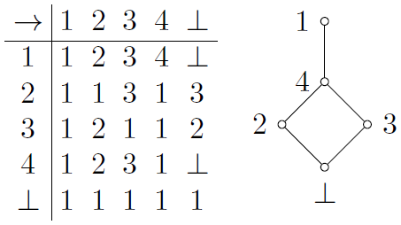
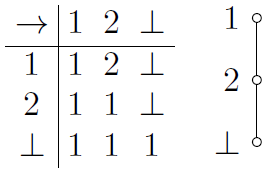

Notes to Mally’s Deontic Logic
1. Im Jahre 1919 wurde mir das Wort Selbstbestimmung, das in aller Leute Munde war, Anlaß eines Versuches, mir einen klaren Begriff zu dem Wort zu bilden. Natürlich stieß ich dabei alsbald auf die Schwierigkeiten und Dunkelheiten des Sollensbegriffes: das Problem wandelte sich. Grundbegriff aller Ethik, kann der Begriff des Sollens ein brauchbares Fundament ihres Aufbaus nur geben, wenn er in einem System von Axiomen festgelegt ist. Ein solches Axiomensystem führe ich hier vor (Mally 1926, Preface, p. I).
2. Man kann sehr wohl etwas wünschen, sofern esuns angenehm oder sonst wertvoll ist, aber die unangenehme Kehrseite des Tatbestandes gar nicht wünschen. (Mally 1926, p. 15).
3. [F]or every M — that is, for any state of affairs M — “M implies V”, and, respectively, “Λ implies M”, does hold (Mally 1926, 9). Using terminology that Mally himself does not employ, but based on what he writes, we may identify V and Λ, currently denoted by ⊤ and ⊥, with an arbitrarily fixed tautology and an arbitrarily fixed contradiction, respectively.
4. See e.g. Føllesdal and Hilpinen 1981 and McNamara 2006 for a survey.
5. Menger (1939, p. 57) and Føllesdal and Hilpinen (1981, pp. 2-3) made the same decision.
6. Menger (1939, p. 58) said that Mally derived “fifty” theorems, while Føllesdal and Hilpinen (1981, p. 3) said that Mally derived “about fifty” theorems. They probably included some of Mally’s unnumbered theorems, which Mally mentioned only in passing. Our list consists of Mally’s thirty-six explicitly numbered theorems.
7. Diese letzten Sätze, die Seinsollen und Tatsächlichsein zu identifizieren scheinen, sind unter unseren “befremdlichen Folgerungen” wohl die befremdlichsten (Mally 1926, p. 25).
8. The formula on this line is a theorem of the classical propositional calculus because A → (B → B) and A → (B → A) are theorems of this calculus.
9. The formula on this line is a theorem of the classical propositional calculus because
| ¬((U → !A) & (A → ∩)) | ↔ | ¬((U → !A) & (U → ¬A)) |
| ↔ | ¬(U → (!A & ¬A)) | |
| ↔ | U & ¬(!A & ¬A) | |
| → | !A → A |
10. The proofs that A → !A and A ↔ !A are theorems of S0.90 enriched with ! and supplemented with I and III are to be found in Lokhorst 2010.
11. We only prove that I* is a theorem of RD. The other five cases (II* and III* are theorems of RD and I–III follow from I*–III*) are left to the reader.
| 1. | (!A → !A) & (A → ((A → B) → B)) | [ R ] |
| 2. | !A → !((A → B) → B) | [ 1, Ax. I, Def. f ] |
| 3. | !A → ((A → B) → !B) | [ 2, Ax. III(←), Def. f ] |
| 4. | (A → B) → (!A → !B) | [ 3, Permutation ] |
Axiom II* is actually redundant. The following formulas are theorems:
| (a) | (A → B) → ( ¬!¬ A → ¬!¬ B ) | [ I* ] |
| (b) | ¬!¬ ! A → A | [ I*, III* ] |
| (c) | A → ! ¬!¬ A | [ I*, III* ] |
We therefore have:
| 1. | ¬!¬ ( ! A & ! B) → ¬!¬ ! A | [ &Elimination, (a) ] |
| 2. | ¬!¬ ( ! A & ! B) → A | [ 1, (b) ] |
| 3. | ¬!¬ ( ! A & ! B) → B | [ similar to proof of 2 ] |
| 4. | ¬!¬ ( ! A & ! B) → (A & B) | [ 2, 3, &Introduction ] |
| 5. | ! ¬!¬ ( ! A & ! B) → ! (A & B) | [ 4, I* ] |
| 6. | ( ! A & ! B) → ! (A & B) | [ 5, (c) ] |
We owe this proof to John Slaney.
12. Most cases are obvious but some hints for (16)–(18) and (30) may be helpful. (16) is a consequence of I* and IV. (17) follows from (16) and (18). (18) may be proven as follows:
| 1. | !(!A → A) & !(!!A → !A) | [ III* (twice), Adjunction ] |
| 2. | !((!A → A) & (!!A → !A)) | [ 1, II* ] |
| 3. | ((!A → A) & (!!A → !A)) → (!!A → A) | [ R ] |
| 4. | !((!A → A) & (!!A → !A)) → !(!!A → A) | [ 3, I* ] |
| 5. | !(!!A → A) | [ 2, 4 ] |
| 6. | !!A → !A | [ 5, Ax. III(←), Def. f ] |
(30) is proven as follows: we have ∩ → (V → ∩) by Ax. t, whence ∩ → (U → Λ) by Contraposition and Double Negation, whence ∩ → !Λ by (16).
13. In order to prove this claim, we first have to remove an obstacle: (2), (5), (15) and (27) do not belong to the language of RD because they contain propositional quantifiers. If such quantifiers were added in the usual way (Anderson, Belnap & Dunn 1992, sec. 32), then we could easily prove that (2), (5), (15) and (27) are deductively equivalent with (2′), (5′), (15′) and (27′), respectively:
| (2′) | (A f Λ) → (A f B) |
| (5′) | (!A → (B f A)) & ((V f A) → !A) |
| (15′) | A f U |
| (27′) | ∩ f A |
To avoid needless complications, we will not equip RD with quantifiers, but confine our attention to the unquantified versions of (2), (5), (15) and (27). We may now proceed with the actual proof. We use the following matrices:
|
|
Each theorem M of RD has the following property: v(M)∈{1, 3, 5} for every assignment v of values to the variables in M such that
- v(A) ∈ {0, 1, 2, 3, 4, 5},
- v(V) = 1,
- v(U) = 2,
- v(¬A), v(A → B) and v(A & B) are as indicated in the tables,
- v(A ∨ B) = v(¬(¬A & ¬B)), and
- v(!A) = v(U → A).
(1), (2), (5), (7), (12), (13), (15), (19)–(23), (24)–(29), (31)–(35), A → !A and !A → A (unquantified versions) lack this property, so these formulas are not theorems of RD. (These matrices were discovered by the computer program MaGIC. See the section Other Internet Resources for information on this program.)
14. Menger’s theorem A ↔ !A is a theorem of both RD+(34) and RD+(35):
| 1. | A ↔ (V → A) | [ Ax. t ] |
| 2. | A ↔ (U → A) | [ 1, either (34) or (35) ] |
| 3. | A → !A | [ 2, (16) ] |
| 4. | (A → ∩) → ((U → !A) → (U → !∩)) | [ I*, Prefixing ] |
| 5. | (A → ∩) → (¬(U → !∩) → ¬(U → !A)) | [ 4, Contraposition ] |
| 6. | ¬(U → !∩) → ((A → ∩) → ¬(U → !A)) | [ 5, Permutation ] |
| 7. | (A → ∩) → ¬(U → !A) | [ 6, Ax. V, Def. f ] |
| 8. | !A → A | [ 2, 7, R ] |
| 9. | A ↔ !A | [ 3, 8, Adjunction ] |
However, neither (34) nor (35) is derivable in RD supplemented with A ↔ !A. To prove this, we use the following table from Anderson and Belnap 1975, p. 148:
| → | 0 1 2 | ¬ |
| 0 | 2 2 2 | 2 |
| 1 | 0 1 2 | 1 |
| 2 | 0 0 2 | 0 |
Each theorem M of RD+{A ↔ !A} has the following property: v(M) ∈ {1, 2} for every assignment v of values to the variables in M such that
- v(A) ∈ {0, 1, 2},
- v(V) = 1,
- v(U) = 2,
- v(¬A) and v(A → B) are as indicated in the table,
- v(A & B) = min{v(A), v(B)},
- v(A ∨ B) = max{v(A), v(B)}, and
- v(!A) = v(A).
But v((34)) = v(U → V) = 0 and v((35)) = v(Λ → ∩) = 0, so (34) and (35) are not theorems of RD+{A ↔ !A}.
15. See Lokhorst 1999, pp. 277-278.
16. One may use the three-valued matrices of note 11 to prove this.
17. Anderson 1967, p. 348. However, Menger (1939, p. 59) had already defined “I command p” as “unless p, something unpleasant will happen,” or in symbols: Cp ↔ (¬p → A), where Cp stands for “I command p” and A denotes the statement that the unpleasant thing will happen.
18. One may use the six-valued matrices of note 10 to prove this.
19. Wer richtig will, will nicht (auch nicht impliziterweise) das Negat des Gewollten; richtiges Wollen ist widerspruchsfrei (Mally 1926, p. 49). Mally regarded this as a paraphrase of Axiom V, but this is not entirely correct. Morscher (1998, p. 106) has suggested that ARD2 expresses Mally’s intentions more adequately than Axiom V does.
20. ARD1 is a theorem of RD+ARD1( → ) by virtue of theorem (16), i.e., ARD1( ← ). This completes the proof. Notice that Axiom V is redundant because we have !U by Ax. IV, whence ¬!∩ by ARD2, whence ¬(U → ∩) by ARD1, whence ¬(U → (U → ∩)) by R, whence ¬(U → !∩) by ARD1, whence Axiom V by Def. f.
21. Proof:
| 1 | !¬ (A & ¬ B) ↔ !(¬ A ∨ B) | [ (12d) ] |
| 2 | ((!A → !A) & (A → B)) → (!A → !B) | [ Ax. I ] |
| 3 | (A → B) → (!A → !B) | [ 2 ] |
| 4 | A → ((!A → A) → A) | [ IPC ] |
| 5 | A → (!(!A → A) → !A) | [ 3, 4 ] |
| 6 | !(!A → A) | [ Ax. III ] |
| 7 | A → !A | [ 5, 6 ] |
| 8 | ¬ (A & ¬ A) | [ IPC ] |
| 9 | !¬ (A & ¬ A) | [ 7, 8 ] |
| 10 | !(A ∨ ¬ A) | [ 1, 9 ] |
22. Proof. First, !A ↔ ¬ ¬ A is a theorem of ID:
| 1 | ((!A → !A) & (A → B)) → (!A → !B) | [ Ax. I ] |
| 2 | (A → B) → (!A → !B) | [ 1 ] |
| 3 | A → (¬ A → ⊥ ) | [ IPC ] |
| 4 | !A → !(¬ A → ⊥ ) | [ 2, 3 ] |
| 5 | !A → (¬ A → !⊥ ) | [ 4, Ax. III ] |
| 6 | ⊥ → (U → ¬ U ) | [ IPC ] |
| 7 | !⊥ → !(U → ¬ U ) | [ 2, 6 ] |
| 8 | !(U → ¬ U ) → (U → !¬ U ) | [ Ax. III ] |
| 9 | (U → !¬ U ) → ⊥ | [ A5 ] |
| 10 | !⊥ → ⊥ | [ 7, 8, 9 ] |
| 11 | !A → ¬ ¬ A | [ 5, 10 ] |
| 12 | (A ∨ ¬ A) → (¬ ¬ A → A) | [ IPC ] |
| 13 | !(¬ ¬ A → A) | [ 2, 12, Ax. VI ] |
| 14 | ¬ ¬ A → !A | [ 13, Ax. III ] |
| 15 | !A ↔ ¬ ¬ A | [ 11, 14 ] |
Second, the axioms of ID can be derived from the following theorems of IPC plus !A ↔ ¬ ¬ A and (34):
| 1 | ((A → ¬ ¬ B) & (B → C)) → (A → ¬ ¬ C) |
| 2 | ((A → ¬ ¬ B) & (A → ¬ ¬ C)) → (A → ¬ ¬ (B & C)) |
| 3 | (A → ¬ ¬ B) ↔ ¬ ¬ (A → B) |
| 4 | ¬ ¬ T |
| 5 | ¬ (T → ¬ ¬ ¬ T) |
23. Proof.
| 1 | !A ↔ ¬ ¬ A | [ Fact 1 ] |
| 2 | A ↔ ¬ ¬ A | [ CPC ] |
| 3 | A ↔ !A | [ 1, 2 ] |
24. Proof: see Figure 1: ¬ ¬ (2 ∨ 3) → (¬ ¬ 2 ∨ ¬ ¬ 3) = ¬ ¬ 4 → 4 = 1 → 4 = 4.

Figure 1. ∧ and ∨ are interpreted as lattice meet and join, respectively. The designated value is 1. Matrix from McKinsey 1939, p. 157.
25. Proof: see Figure 1: ¬ (2 & ¬ ¬ ¬ 2) ↔ (¬ 2 ∨ ¬ ¬ 2) = 1 ↔ 4 = 4.
26. Proof. First, if (13b) is a theorem, then !(A ∨ B) → (!A ∨ !B) is also a theorem:
| 1 | (A ∨ B) → ¬ (¬ A & ¬ B) | [ IPC ] |
| 2 | ¬ ¬ (A ∨ B) → ¬ (¬ A & ¬ B) | [ 1 ] |
| 3 | ¬ (¬ A & ¬ B) → (¬ ¬ A ∨ ¬ ¬ B) | [ (13b), Fact 1 ] |
| 4 | !(A ∨ B) → (!A ∨ !B) | [ 2, 3, Fact 1 ] |
Second, if !(A ∨ B) → (!A ∨ !B) is a theorem, then (13b) is also a theorem:
| 1 | !(A ∨ B) → (!A ∨ !B) | [ Assumption ] |
| 2 | !(A ∨ B) ↔ (!A ∨ !B) | [ 1, Ax. I ] |
| 3 | ¬ (A & ¬ B) ↔ ¬ ¬ (¬ A ∨ ¬ ¬ B) | [ IPC ] |
| 4 | ¬ ¬ (¬ A ∨ ¬ ¬ B) ↔ (¬ A ∨ ¬ ¬ B) | [ 2, Fact 1 ] |
| 5 | ¬ (A & ¬ B) ↔ (¬ A ∨ ¬ ¬ B) | [ 3, 4 ] |
| 6 | ¬ (A & ¬ !B) ↔ (¬ A ∨ !B) | [ 5, Fact 1 ] |
27. Proof: see Figure 2: ¬ ¬ 2 → 2 = 1 → 2 = 2.

Figure 2. ∧ and ∨ are interpreted as lattice meet and join, respectively. The designated value is 1. Matrix from McKinsey 1939, p. 157.
28. Proof. IPC provides (A → ¬ ¬ B) ↔ (¬ ¬ A → ¬ ¬ B), so ID provides (A → !B) ↔ (!A → !B) by Fact 1. ID provides !A ↔ ¬ ¬ A by Fact 1.
29. Morscher (1998) has made a somewhat similar proposal, but the details are different. The present approach was inspired by a number of suggestions made by Lou Goble.